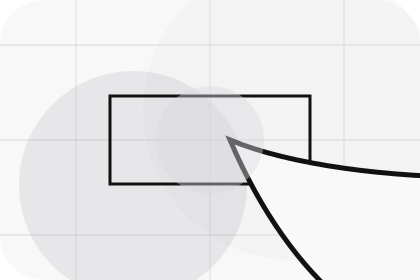
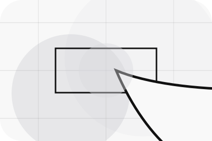
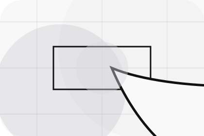
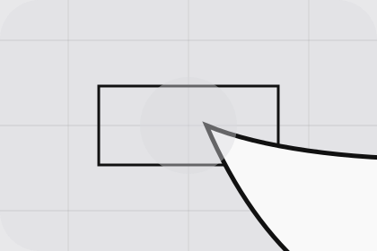

Best Fit
Who should use sales and when it belongs in the services journey.
Services / 01
Services opens as a clear automotive decision hub: what Motor offers, who it helps, why it matters, and which route to take first.
The first screen combines positioning, proof, primary action, and fast internal navigation, so people can act immediately or compare the rest of the services route with context.
Stark vehicle product hero
Select the closest route and Motor keeps the next step, proof, and follow-up expectation aligned with purchase confidence and desire.
Services / 02
Sales explains the practical scope, best-fit situations, and expected outcome so automotive visitors can compare options without decoding jargon.
The section keeps the offer concrete: what is included, who it is best for, what decision it supports, and which linked route gives the deeper detail.
Explore ServicesWho should use sales and when it belongs in the services journey.
The practical benefit visitors should expect after choosing this route.
Where to compare details, pricing, support, or contact options before committing.
Services / 03
Leasing explains the practical scope, best-fit situations, and expected outcome so automotive visitors can compare options without decoding jargon.
The section keeps the offer concrete: what is included, who it is best for, what decision it supports, and which linked route gives the deeper detail.
Explore Services

Who should use leasing and when it belongs in the services journey.
Services / 04
Maintenance explains the practical scope, best-fit situations, and expected outcome so automotive visitors can compare options without decoding jargon.
The section keeps the offer concrete: what is included, who it is best for, what decision it supports, and which linked route gives the deeper detail.
Explore ServicesWho should use maintenance and when it belongs in the services journey.
The practical benefit visitors should expect after choosing this route.
Where to compare details, pricing, support, or contact options before committing.
Services / 05
Tradein explains the practical scope, best-fit situations, and expected outcome so automotive visitors can compare options without decoding jargon.
The section keeps the offer concrete: what is included, who it is best for, what decision it supports, and which linked route gives the deeper detail.
Explore ServicesWho should use tradein and when it belongs in the services journey.
The practical benefit visitors should expect after choosing this route.
Where to compare details, pricing, support, or contact options before committing.
Services / 06
Fleet explains the practical scope, best-fit situations, and expected outcome so automotive visitors can compare options without decoding jargon.
The section keeps the offer concrete: what is included, who it is best for, what decision it supports, and which linked route gives the deeper detail.
Explore ServicesMotor structures fleet around best fit, what changes, and a clear next route so visitors can compare the block quickly before they book a test drive.
Book Test DriveServices / 08
Benefits defines the better state Motor is built to create, with enough detail to make the promise believable.
A vehicle showroom site with precise white space, car-card rhythm, finance paths, and test-drive CTAs. The section grounds that direction in concrete benefits, visible tradeoffs, and a next route visitors can use when the promise feels relevant.
Explore ServicesBenefits defines what becomes clearer, easier, or safer when Motor is the chosen route.
The benefit is tied to purchase confidence and desire, not a vague quality claim.

Visitors get a linked path to compare the promise against services, standards, or examples.
Services / 09
Scope explains the practical scope, best-fit situations, and expected outcome so automotive visitors can compare options without decoding jargon.
The section keeps the offer concrete: what is included, who it is best for, what decision it supports, and which linked route gives the deeper detail.
Explore ServicesWho should use scope and when it belongs in the services journey.
The practical benefit visitors should expect after choosing this route.
Where to compare details, pricing, support, or contact options before committing.
Services / 10
Motor closes the services route with a clear action, a quick reminder of the value, and a low-friction way to book a test drive.
Visitors who are ready can use the primary action. Visitors who are still comparing can scan the section links, proof, and support routes before they book a test drive.
Book Test DriveThe final block keeps the choice simple: act now, compare one more proof route, or send enough detail for a focused response.
Book Test Drivepurchase confidence and desire
A vehicle showroom site with precise white space, car-card rhythm, finance paths, and test-drive CTAs. Services ends with a direct path to book a test drive, plus enough context for visitors who still need to compare.

Book Test DriveInformation is provided for planning and should be reviewed for the final client, location, and operating rules.